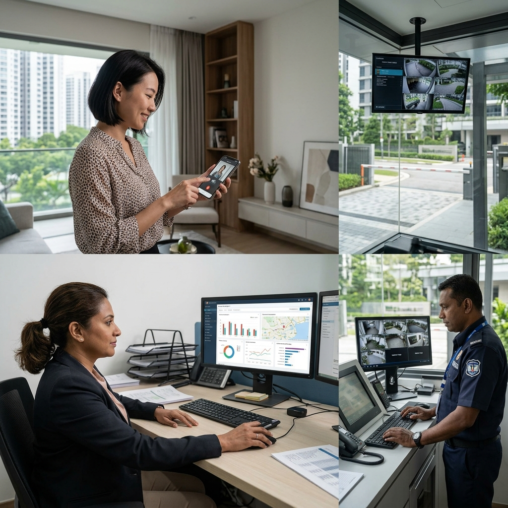
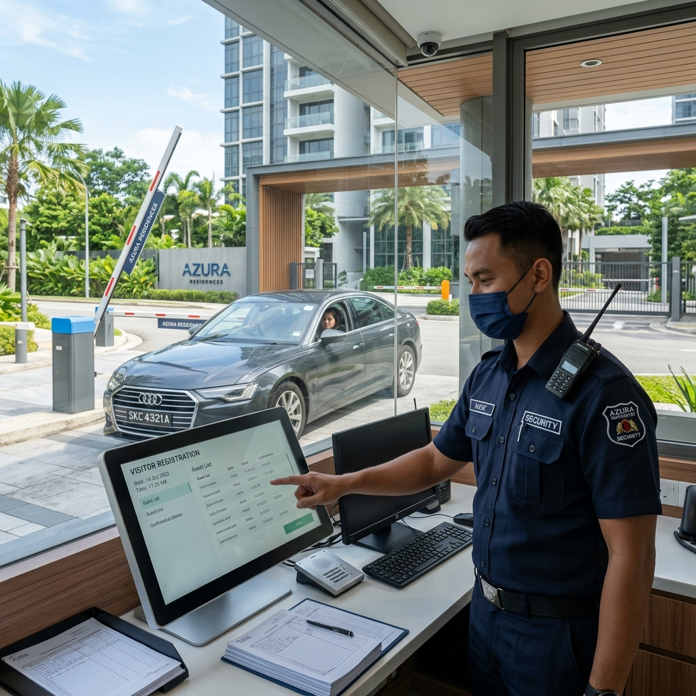
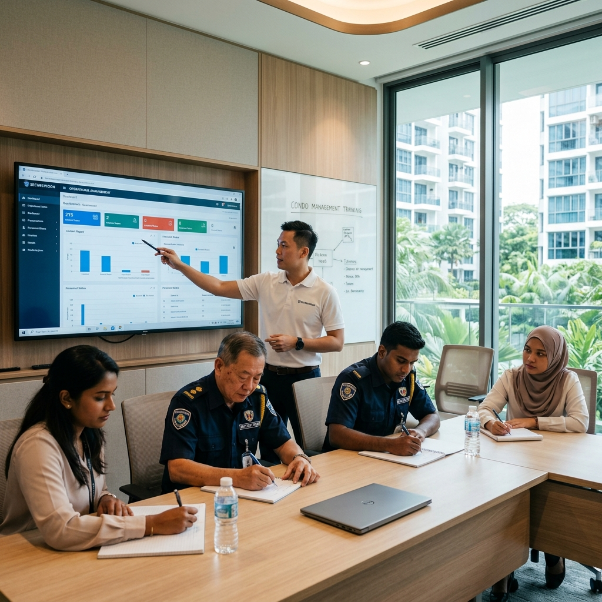

Most managing agents we speak to are running their estates the same way they always have — one system per estate, one support number per vendor, one set of login credentials per property, and a mental map of which guard team is on which shift at which development.
It works. Until it does not.
The problem is not that MAs lack capability. It is that the tools available to them were designed for single-estate operations, not portfolio management. When you are responsible for five estates and three of them have security issues in the same week, the friction compounds fast.
VESTA was designed to reduce that friction. It brings residents, estate management, and security infrastructure together on one platform — giving everyone the view they need, with the controls appropriate to their role. This article explains exactly what VESTA does today, how it works across the three groups who use it, and where the platform is heading for MAs managing multiple estates.
1. VESTA Is One Platform — Three Different Views
The most important thing to understand about VESTA is that it is not a single app with a single interface. It is one platform with three distinct views — each designed for a different user with different needs and different levels of access.
The resident view, the management view, and the guard view all run on the same underlying system. This matters because it means data flows between them in real time without manual transfer. When a resident pre-registers a visitor in the resident app, that information appears immediately in the guard view at the guard house. When a guard logs an incident, it appears immediately in the management view. Nobody is transcribing information between systems. Nobody is calling to confirm whether a visitor was expected.

The Resident View — what residents experience on their phones:
- Facility booking. Residents book the pool, gym, BBQ pits, and function rooms directly from the app. No phone calls to the management office. No paper forms. Availability is visible in real time and bookings are confirmed instantly.
- Form submission. Renovation permit applications, feedback submissions, visitor pre-registration for extended stays — all handled through the app without a trip to the management office.
- Access control. Residents open the main gate, side gate, and carpark barrier directly from their phone. No access card required. This is particularly useful for residents who have their hands full, residents who have lost their card, and residents who want to let a family member in remotely.
- Intercom on the phone. When a visitor presses the intercom at the main entrance, the call routes to the resident's phone — not just to a handset inside the unit. The resident sees the visitor on camera, speaks to them, and opens the gate from wherever they are. Including overseas.
- Guest invitation. Residents invite visitors in advance through the app. Pedestrian visitors receive a QR code that opens the pedestrian gate on arrival. Driving visitors have their vehicle plate pre-registered — when they arrive, the gantry reads the plate and opens automatically. No queuing at the guard house. No logbook entry. No guard intervention required for expected visitors.
The Management View — what you see as a managing agent:
- The management view gives you operational oversight of everything happening on the estate. Access logs showing who entered and exited, and when. Vehicle movement records. Facility booking history. Incident reports. System status — whether the cameras, gantries, and access points are online and functioning.
- You can generate MCST audit reports directly from the platform. Access event summaries, incident logs, security expenditure tracking — the documentation your committees need for AGMs is compiled automatically, not assembled manually from multiple exports.
- You can manage user permissions. Adding a new resident, issuing a temporary contractor access credential, revoking an access card that has been reported lost — all done from the management view without calling the integrator.
The Guard View — what the guard house sees:
- The guard view is the operational interface for the on-site security team. When a visitor arrives without pre-registration, the guard logs them through VESTA — name, identity, purpose, vehicle plate if applicable. That log is immediately visible in the management view.
- Shift handover reporting is partially handled through VESTA — guards can log incidents and flag system issues through the platform. This reduces the reliance on paper handover books and gives management a searchable digital record of every shift.
- The guard view also shows pre-registered visitor arrivals — so when a resident has invited a guest through the app, the guard sees the expected arrival before the visitor reaches the gate. This eliminates the friction of guests who arrive and say "I'm expected" while the guard searches a paper logbook.
2. What VESTA Means for Your Day-to-Day Operations Right Now
Today, VESTA operates on a per-estate basis. Each estate you manage has its own VESTA instance — its own login, its own configuration, its own resident database, and its own reporting. If you manage five estates, you have five VESTA logins.
This is not the multi-estate single-dashboard experience that portfolio management ideally needs — and we will address where that is heading shortly. But even on a per-estate basis, VESTA changes the operational picture significantly for MAs who have been managing estates with fragmented or manual systems.

What changes immediately when an estate goes live on VESTA:
- Resident complaints drop. The most common source of guard house friction — expected visitors who cannot get in because the guard cannot find their pre-registration — disappears. Residents pre-register through the app. The guard sees the expected arrival. The gantry opens automatically for driving visitors. The process that previously involved a phone call from the guard to the resident, a manual logbook entry, and a barrier raised by hand takes seconds and requires no human intervention.
- Facility booking disputes become traceable. When a resident claims they booked the BBQ pit and someone else is using it, the booking record is in the system with a timestamp. There is no ambiguity and no argument. The management view shows exactly what was booked, by whom, and when.
- MCST audit preparation stops being a project. The documentation that previously required the estate manager to compile access logs, incident reports, and maintenance records from multiple sources before each AGM is generated from the management dashboard on demand. The committee gets a clean, consistent report every quarter without anyone having to assemble it.
- Lost access card management becomes immediate. When a resident reports a lost card, the credential is revoked from the management view in under a minute. Previously, this required a call to the integrator, a wait for someone to log into the system remotely, and uncertainty about whether the revocation had taken effect. With VESTA, the MA or estate manager handles it directly.
- After-hours gate access requests become self-service. Residents who need to let someone in outside guard house hours — a late-arriving visitor, a delivery — can handle it through the app without calling the guard or the management office. This reduces after-hours call volume significantly.
3. The Multi-Estate Dashboard — What Is Coming for Portfolio Management
The honest answer to "can I see all my estates from one login?" is: not yet — but this is exactly where VESTA is heading, and the architecture is already built for it.
The current per-estate structure is a foundation, not a ceiling. The underlying platform is designed to support multi-estate views — a single management login that aggregates access logs, incident reports, system status, and audit documentation across all estates in your portfolio. The resident and guard layers remain estate-specific. The management layer scales across sites.
For MAs managing multiple estates, this means:
- One login. All estates visible from a single management dashboard. System status — online or flagging — visible at a glance across your entire portfolio without logging into each estate separately.
- Aggregated reporting. MCST audit reports generated per estate, but accessible and comparable from one interface. Portfolio-level visibility into which estates have open incidents, which systems have flagged faults, and which maintenance visits are due.
- Centralised user management. Adding a new estate manager credential, revoking a contractor's temporary access, or updating resident records across multiple estates from one interface rather than logging into each system separately.
We are being transparent about the timeline because MAs make long-term decisions. Estates that deploy VESTA today are building on the platform that this multi-estate capability will run on. The transition from per-estate to portfolio view will not require a system replacement — it is a platform evolution, not a hardware change.
4. What Deploying VESTA on Your Estates Actually Involves
MAs who recommend VESTA to their MCST committees sometimes hesitate because they are not sure what the transition involves — for residents, for the guard team, and for the estate manager.

For residents:
VESTA is downloaded as an app on iOS or Android. Residents register with their unit number and a verified contact — the estate manager approves the registration, which prevents unauthorised access to the resident interface. Onboarding takes most residents under ten minutes. For residents who prefer not to use the app, their existing access card continues to work. VESTA is additive, not a replacement.
For the guard team:
The guard interface runs on a tablet or desktop at the guard house. We conduct a hands-on training session with every guard team before go-live — typically two hours covering visitor logging, pre-registration checking, incident reporting, and shift handover. Follow-up support is available through the named project manager for the first 30 days after go-live.
For the estate manager:
The management view is web-based — accessible from any browser on any device. Training covers user management, report generation, access credential management, and system status monitoring. Most estate managers are comfortable with the core functions within one day.
5. Is VESTA Right for Every Estate You Manage?
Honest answer: not necessarily today, and it depends on the estate.
VESTA delivers the most immediate value in estates where visitor management is a daily friction point — high-traffic developments with multiple gantry entry points, large unit counts with active facility usage, or estates where the current visitor logbook system is generating regular resident complaints.
For smaller boutique developments with low visitor volume and a simple single-gantry setup, the full VESTA platform may be more than the estate currently needs. In these cases, the access control and intercom integration delivers value without necessarily deploying the full resident app layer.
The right conversation to have with your MCST committees is not "should we get VESTA" — it is "what are the operational pain points this estate is experiencing, and which of those would VESTA actually solve." We have that conversation at the estate assessment stage, before any proposal is made.

Ler Wee Meng
Ler Wee Meng is the Founder and CEO of Securevision. He holds a Bachelor of Engineering (Electrical and Electronic) from the National University of Singapore and a Bachelor of Laws from the University of London. With over 37 years of experience in the security industry, he has personally overseen the design and implementation of security systems for more than 1,000 sites across Singapore.
He is the principal architect of the Securevision SECURE™ Framework and spearheaded the development of the VESTA integration platform. His direct field experience across thousands of residential units ensures that every system designed by Securevision is practical, maintainable, and built to withstand the unique technical challenges of Singapore's climate and regulatory landscape.